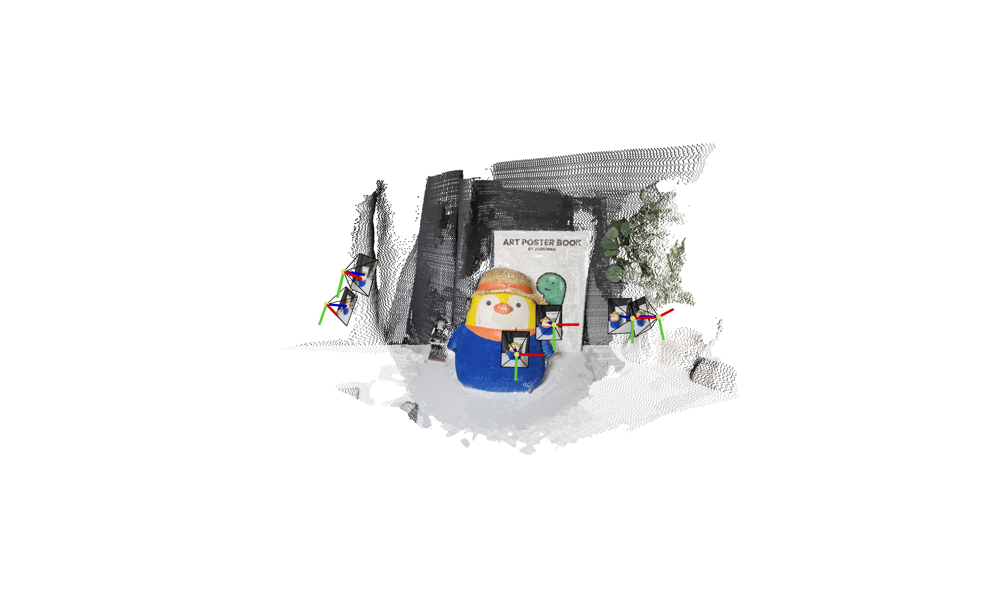

VGGSfM vs. MASt3R
I evaluated VGGSfM and MASt3R on 5-, 10-, and 27-view image sets. Both outputs were converted to COLMAP format, inspected in one Viser tool, and used to initialize the same 2DGS path.
VGGSfM: pose-first
Joint recovery and differentiable bundle adjustment produced sparser points but more consistent poses.
MASt3R: density-first
Dense matching recovered more structure, but the camera estimates required further refinement.
Sparse-view reconstruction
Both learned pipelines reconstructed sparse scenes where the tested COLMAP configuration failed to initialize.
Pose refinement
A follow-up experiment refined MASt3R cameras during Radiance Field training and recovered a cleaner result.
Results
VGGSfM stayed within 0.01 angular distance of the COLMAP reference, while MASt3R exceeded 0.1, explaining why the denser point cloud did not always render better.
Reconstructed point clouds
| MASt3R | VGGSfM |
|---|---|
 |
 |
Downstream 2DGS reconstruction
| MASt3R | VGGSfM |
|---|---|
MASt3R with camera-pose refinement
The result confirmed that learned reconstruction and differentiable pose refinement can be complementary. The repository has since attracted more than 230 GitHub stars.